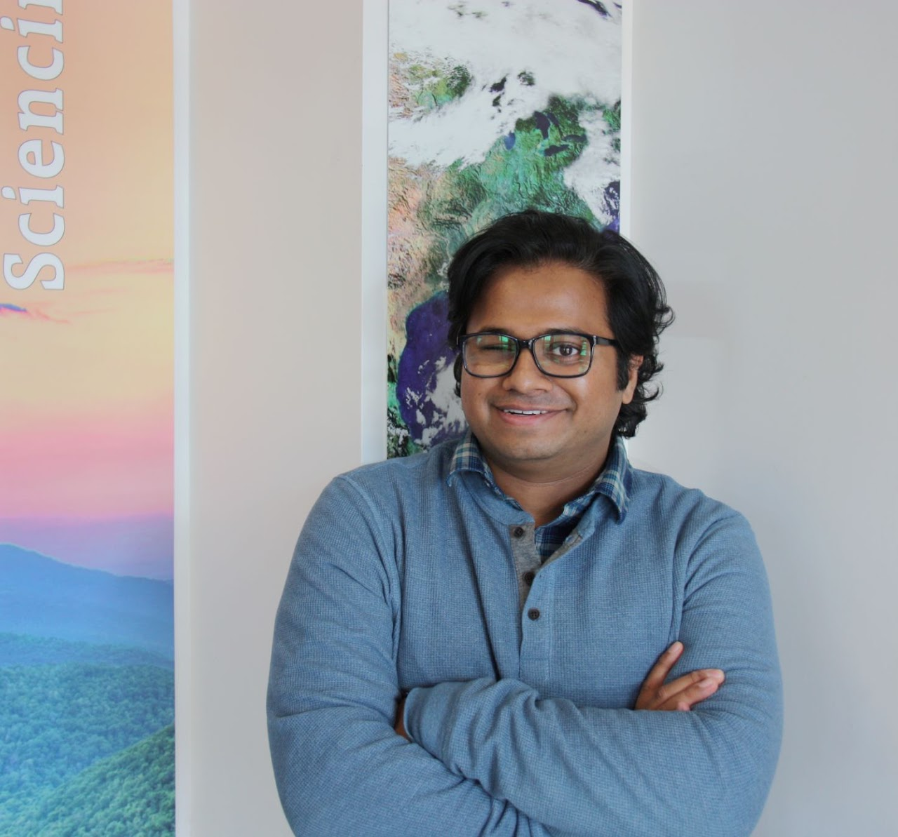

Nilesh Shinde
I am an Assistant Professor at the O'Neill School of Public and Environmental Affairs, Indiana University Bloomington. I am an environmental economist and a trained engineer.
Previously, I was a postdoc in Resource Economics at UMass Amherst. I hold a Ph.D. in Economics & Informatics (Virginia Tech), an M.Sc. in Development Economics (Brazil) and a B.E. in Mechanical Engineering (India). I am affiliated with the Ostrom Workshop, CLACS and the Dhar India Studies Program.
Please feel free to get in touch at nnshinde@iu.edu.

Research overview
I study how property rights, institutions and environmental policy shape land and water use. My work covers land tenure and deforestation in the Brazilian Amazon, groundwater and irrigation in India, and the social cost of water pollution in the United States, using causal inference and satellite data.
Recent papers
all papers →Land Registration and Conflict Reduction: Evidence from the Brazilian Amazon
(with Stella Schons, Alexandre Gori Maia, and Gregory Amacher) 2027. Journal of Environmental Economics and Management. PDF
Primary Care, Weather, and the Missed Opportunity for Savings
(with Maranna Yoder, Guangqing Chi, Seth Freedman, Kosali Simon, and Sonia Angell) 2026. Health Affairs Scholar. PDF
The Cold, Hard Truth: Evidence from Heterogeneous Snowpack Insulation Effect on Winter Wheat Yields in China
(with Zhenyu Yao) 2026. Environment and Development Economics. PDF
Beyond the Canopy: How Satellite Data Detection Thresholds Influence Policy Evaluation and Deforestation Behavior
(with Kathryn Baragwanath) 2025. Journal of Environmental Economics and Management. PDF